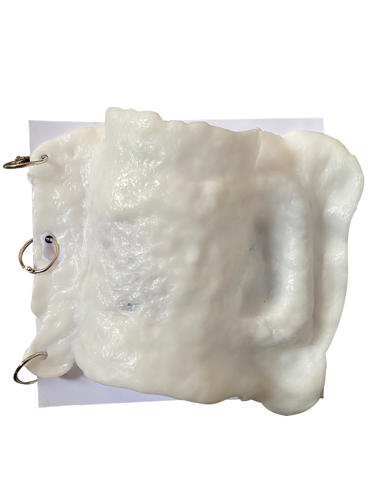
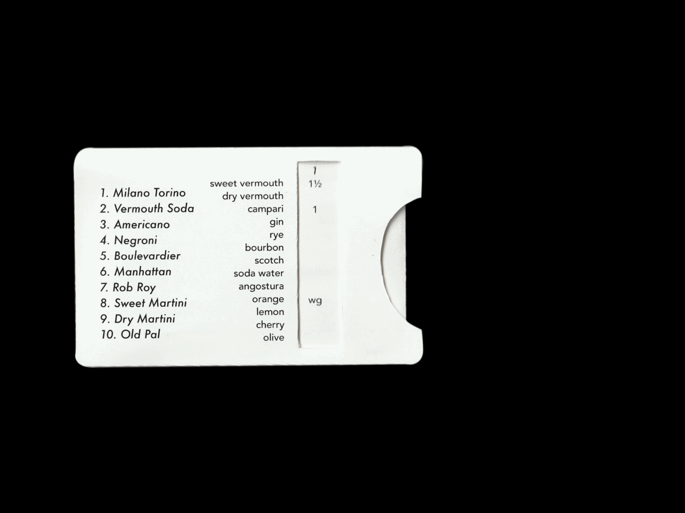
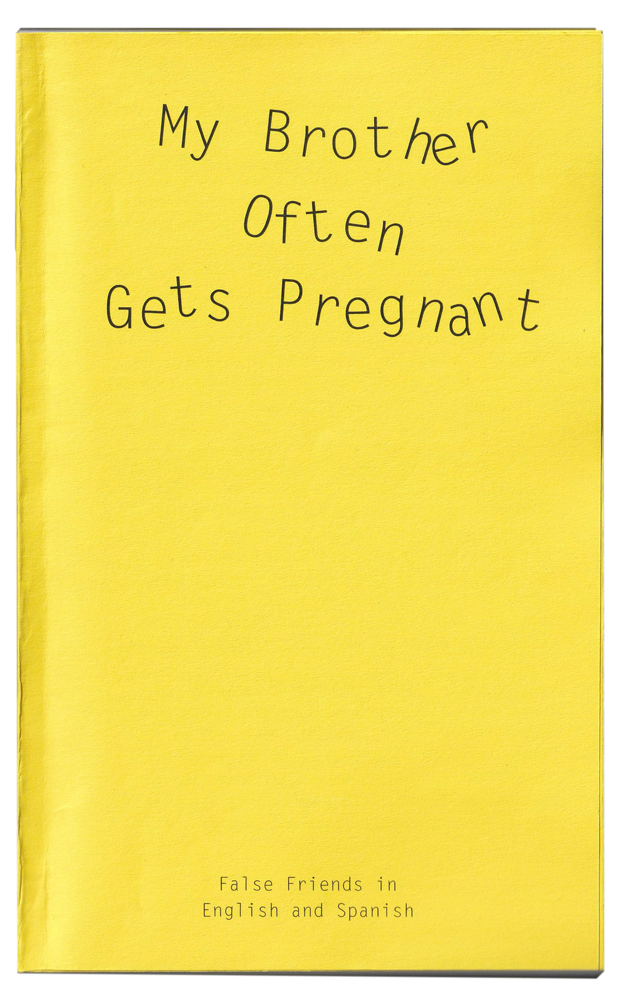

Abbotsford
I took a stroll down to Abbotsford, a suburb full of charm, and did some observin'.
I ate some pho, did a bit of grocery shopping, sniffed in some dust
and made a poster for this place.

Mein Stein
I put my absolute everything into making this publication.
The theme of the book is 'association' and it guides y'all through my train of thoughts,
from Mein Stein to my search for Seamonkeys.

Vermouth
Guide to vermouth, a fortified wine drink that nans used to drink in the 80s. This guide comes with a slig tag with 10 vermouth cocktail recipes
and a leaflet with concise information about vermouth and vermouth cocktails.

MBOGP
Did you wonder why there are so many similar sounding words between English and Spanish?
This is a little book that explores concept of cognates and false friends. ¡Qué aproveches!

Misc.
These are some miscellaneous things I've worked on. Illustrations
Photography
Animation